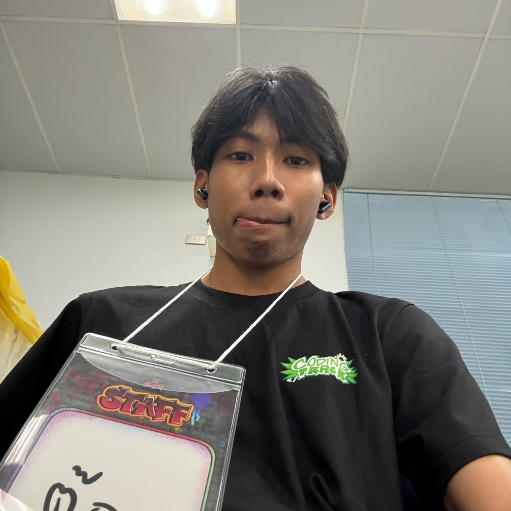

Student Project · Arduino
Kadodzing
เกม Flappy Bird ที่ใช้ระดับเสียงเป็นตัวควบคุม โดย Arduino UNO R4 WiFi อ่านค่าความดังจากไมโครโฟนเซนเซอร์ แล้วส่งข้อมูลไปยังเว็บแอปพลิเคชันเพื่อควบคุมการเคลื่อนที่ของนก ผู้เล่นสามารถฝึกควบคุมเสียงและเห็นผลตอบสนองของเกมได้แบบเรียลไทม์
เล่นเกมเกี่ยวกับโครงงาน
โครงงาน Kadodzing เป็นการพัฒนาเกมที่ประยุกต์ใช้ระดับความดังของเสียงในการควบคุมตัวละครภายในเกม Flappy Bird โดยมีวัตถุประสงค์เพื่อศึกษาและประยุกต์ใช้ความรู้ด้าน Physical Computing ในการเชื่อมต่ออุปกรณ์ฮาร์ดแวร์เข้ากับเว็บแอปพลิเคชัน ระบบใช้บอร์ด Arduino UNO R4 WiFi ร่วมกับเซนเซอร์รับเสียง MAX9814 ซึ่งเชื่อมต่อกับขา A0 เพื่อรับสัญญาณเสียงและอ่านค่าระดับเสียง จากนั้นส่งข้อมูลไปยังเว็บแอปพลิเคชันผ่าน USB Serial โดยอาศัย Web Serial API เว็บไซต์จะนำค่าระดับเสียงที่ได้รับมาเปรียบเทียบกับค่า Threshold ที่กำหนดไว้ หากระดับเสียงถึงเกณฑ์ที่กำหนด ระบบจะสั่งให้ตัวละครนกบินขึ้น เพื่อให้ผู้เล่นสามารถควบคุมเกมด้วยเสียงแทนการใช้ปุ่มควบคุมแบบทั่วไป โครงงานนี้เป็นการนำเทคโนโลยีไมโครคอนโทรลเลอร์และเว็บเทคโนโลยีมาประยุกต์ใช้ร่วมกัน เพื่อสร้างรูปแบบการเล่นเกมที่มีปฏิสัมพันธ์กับผู้เล่นผ่านเสียง
วัตถุประสงค์
1. เรียนรู้ Arduino และเซนเซอร์
ศึกษาการอ่านค่า Analog จากไมโครโฟน และการวัดระยะด้วย Ultrasonic
2. ควบคุมด้วยเสียงแบบ Real-time
ประมวลผลเสียงและสั่งให้นกกระโดดได้ทันทีที่ส่งเสียง
3. เชื่อม Hardware กับ Software
ส่งข้อมูลจาก Arduino ไปยังเว็บไซต์ผ่าน USB Serial
4. วิธีควบคุมเกมแบบใหม่
เล่นเกมโดยไม่ต้องกดปุ่ม ใช้เสียงหรือมือแทน
หลักการทำงาน
ขั้นที่ 1 · Input
Microphone
ไมโครโฟนแปลงเสียงเป็นสัญญาณไฟฟ้า ส่งเข้าขา A0
ขั้นที่ 2 · Process
Arduino
คำนวณความดัง ถ้าเกิน Threshold จะส่ง JUMP!
ขั้นที่ 3 · Output
เกมบนเว็บ
เว็บรับคำสั่งผ่าน USB แล้ววาดนก ท่อ และคะแนนบน Canvas
- เสียงดัง → นกบินขึ้น
- เสียงเบา → นกตกลงตามแรงโน้มถ่วง
- โหมดมือ → ยกมือสูง-ต่ำเหนือเซนเซอร์ Ultrasonic นกจะบินตามความสูงของมือ (เอามือเข้าใกล้กว่า 10 cm = เริ่มเกม)
ทดลองเล่นเกม
กด SPACE หรือคลิกที่เกมเพื่อทดสอบ หรือเชื่อมต่อ Arduino แล้วใช้เสียง
Arduino
สถานะ: ยังไม่เชื่อมต่อ
ใช้ Chrome หรือ Edge และปิด Serial Monitor ก่อน
ระดับเสียง: 0
ค่าน้อย = ไวขึ้น · ค่ามาก = ต้องเสียงดังขึ้น
โหมด: เสียง
คะแนน: 0 · สูงสุด: 0
ปุ่ม START = เริ่มเกม · ปุ่ม MODE = สลับโหมดเสียง/มือ
อุปกรณ์ฮาร์ดแวร์
Arduino UNO R4 WiFi
บอร์ดไมโครคอนโทรลเลอร์หลักสำหรับอ่านค่าเซนเซอร์ และควบคุมการทำงานของระบบ
LCD 16x2 I2C
จอแสดงผลสำหรับแสดงข้อมูลของระบบ โดยเชื่อมต่อผ่าน I2C ช่วยลดจำนวนสายที่ใช้
Ultrasonic HC-SR04
เซนเซอร์วัดระยะทาง ใช้ตรวจจับระยะห่างของมือ เพื่อควบคุมเกมในโหมดมือ
MAX9814 Microphone
ไมโครโฟนพร้อมวงจรขยายสัญญาณ ใช้รับเสียงและอ่านระดับเสียง เพื่อนำมาใช้ควบคุมเกม
Push Button ×2
ปุ่มกด 2 ปุ่มสำหรับเลือกโหมดเสียงและโหมดมือ
Breadboard & Jumper Wires
ใช้เชื่อมต่ออุปกรณ์และประกอบวงจรโดยไม่ต้องบัดกรี
การต่อขา
| อุปกรณ์ | ขาอุปกรณ์ | ขา Arduino |
|---|---|---|
| LCD I2C | VCC / GND / SDA / SCL | 5V / GND / A4 / A5 |
| HC-SR04 | VCC / GND / Trig / Echo | 5V / GND / D10 / D11 |
| MAX9814 | GND / VDD (VCC) / OUT | GND / 5V / A0 |
| ปุ่มเลือกโหมดเสียง | ขา 1 / ขา 2 | D12 / GND |
| ปุ่มเลือกโหมดมือ | ขา 1 / ขา 2 | A2 / GND |
ไลบรารีและเครื่องมือ
- Arduino IDE — เขียนและอัปโหลดโค้ดลงบอร์ด
- Web Serial API — ให้เว็บอ่านข้อมูลจาก Arduino ผ่าน USB
- HTML5 Canvas + JavaScript — วาดและควบคุมเกม
- HTML + Tailwind CSS — สร้างหน้าเว็บ
สมาชิกในทีม
พีชยพง บุญดี
68070124p>
ส่วนร่วม 25%
พิชัยยุทธ ขวัญบุญ
68070125
ส่วนร่วม 25%

ยศวัฒน์ อิ่มใจ
68070153
ส่วนร่วม 25%
สันต์ทัสน์ เชาว์กิติวุฒิ
68070180
ส่วนร่วม 25%
ผลที่คาดว่าจะได้รับ
- ต้นแบบเกม Flappy Bird ที่ควบคุมด้วยเสียงได้จริง
- เกมบนเว็บที่มีกราฟิกและระบบคะแนน
- เข้าใจการทำงานร่วมกันของเซนเซอร์ ไมโครคอนโทรลเลอร์ และซอฟต์แวร์
- ต่อยอดได้ เช่น เพิ่มจอ LCD แสดงคะแนน หรือเพิ่มระดับความยาก
#include <Arduino.h>
/*
* Voice-Controlled Flappy Bird - Arduino
*
* Board: Arduino UNO R3 or UNO R4
*
* Wiring (same pins as the full version)
* MAX9814 mic OUT -> A0 VDD -> 5V GND -> GND
* HC-SR04 Trig -> D10 Echo -> D11 VCC -> 5V GND -> GND
* START button D12 -> button -> GND
* MODE button A2 -> button -> GND
*
* Buttons
* START start / restart the game
* MODE switch between voice mode and hand mode (ultrasonic)
*
* Messages sent to the website (115200 baud, one per line)
* 182 loudness of the sound (every 20 ms)
* JUMP! voice mode: sound louder than the threshold
* hand mode: hand moved closer than 10 cm
* DIST:23 hand distance in cm, smoothed (every 50 ms, 0 = no hand)
* MODE:VOICE / MODE:HAND
* CMD:START START button pressed
* THRESHOLD:350 current threshold
*
* Messages received from the website
* T400 set threshold to 400
* ? ask for the current threshold
*/
const int MIC_PIN = A0;
const int TRIG_PIN = 10;
const int ECHO_PIN = 11;
const int START_PIN = 12;
const int MODE_PIN = A2;
const int SAMPLE_MS = 20; // measure loudness over 20 ms
const int COOLDOWN_MS = 250; // minimum time between two jumps
const int DIST_EVERY_MS = 50; // read the ultrasonic every 50 ms
const int MAX_CM = 60; // readings further than this are ignored
const int MAX_MISSES = 5; // keep the last distance for 5 bad readings (0.25 s)
const int HAND_JUMP_CM = 10; // hand mode: hand closer than this = jump
const int CLICK_IGNORE_MS = 300; // ignore sound after a button press (the mic hears the click)
int threshold = 350;
bool handMode = false;
bool handNear = false;
int distance = 0; // smoothed distance in cm (0 = no hand)
int lastThree[3]; // last 3 good readings (for the median)
int nextSlot = 0;
int misses = 0;
unsigned long lastJump = 0;
unsigned long lastDist = 0;
unsigned long ledOffTime = 0;
unsigned long ignoreSoundUntil = 0;
String input = "";
// One push button (debounced)
struct Button {
int pin;
bool lastReading; // last value from digitalRead
bool isDown; // stable state: true = pressed
unsigned long changed; // when the reading last changed
};
Button startButton = {START_PIN, HIGH, false, 0};
Button modeButton = {MODE_PIN, HIGH, false, 0};
void setup() {
Serial.begin(115200);
pinMode(TRIG_PIN, OUTPUT);
pinMode(ECHO_PIN, INPUT);
pinMode(START_PIN, INPUT_PULLUP); // pressed = LOW
pinMode(MODE_PIN, INPUT_PULLUP);
pinMode(LED_BUILTIN, OUTPUT);
printThreshold();
Serial.println("MODE:VOICE");
}
void loop() {
readWebsite();
readButtons();
if (millis() - lastDist >= DIST_EVERY_MS) {
lastDist = millis();
distance = readSmoothDistance();
Serial.print("DIST:");
Serial.println(distance);
if (handMode) checkHand();
}
int volume = readVolume();
Serial.println(volume);
// The mic hears the click of a button: ignore sound while a button is down and 300 ms after
if (anyButtonDown()) ignoreSoundUntil = millis() + CLICK_IGNORE_MS;
bool soundAllowed = millis() >= ignoreSoundUntil;
if (!handMode && soundAllowed && volume > threshold && millis() - lastJump >= COOLDOWN_MS) {
jump();
}
if (ledOffTime != 0 && millis() >= ledOffTime) {
digitalWrite(LED_BUILTIN, LOW);
ledOffTime = 0;
}
}
void jump() {
lastJump = millis();
Serial.println("JUMP!");
digitalWrite(LED_BUILTIN, HIGH); // the "L" LED blinks on every jump
ledOffTime = millis() + 80;
}
// Hand mode: moving the hand closer than HAND_JUMP_CM counts as one jump.
// The hand must move away (more than HAND_JUMP_CM + 3 cm) before it can jump again.
void checkHand() {
if (!handNear && distance > 0 && distance < HAND_JUMP_CM) {
handNear = true;
if (millis() - lastJump >= COOLDOWN_MS) jump();
} else if (handNear && (distance == 0 || distance > HAND_JUMP_CM + 3)) {
handNear = false;
}
}
// Loudness = highest reading - lowest reading in SAMPLE_MS
int readVolume() {
int low = 1023;
int high = 0;
unsigned long start = millis();
while (millis() - start < SAMPLE_MS) {
int value = analogRead(MIC_PIN);
low = min(low, value);
high = max(high, value);
}
return high - low;
}
// Smoothed distance:
// 1. a missed echo (0) or a reading further than MAX_CM keeps the last distance,
// and only after MAX_MISSES bad readings in a row do we report 0 (hand gone)
// 2. the median of the last 3 good readings removes single wrong readings (spikes)
int readSmoothDistance() {
int cm = readDistance();
if (cm == 0 || cm > MAX_CM) {
misses++;
if (misses > MAX_MISSES) return 0;
return distance;
}
misses = 0;
if (distance == 0) { // hand just appeared: start the history fresh
lastThree[0] = cm;
lastThree[1] = cm;
lastThree[2] = cm;
}
lastThree[nextSlot] = cm;
nextSlot = (nextSlot + 1) % 3;
return medianOf3(lastThree[0], lastThree[1], lastThree[2]);
}
int medianOf3(int a, int b, int c) {
return max(min(a, b), min(max(a, b), c));
}
// Raw distance in cm from the HC-SR04 (0 = no echo within ~2 m)
int readDistance() {
digitalWrite(TRIG_PIN, LOW);
delayMicroseconds(2);
digitalWrite(TRIG_PIN, HIGH);
delayMicroseconds(10);
digitalWrite(TRIG_PIN, LOW);
long duration = pulseIn(ECHO_PIN, HIGH, 12000);
return duration / 58;
}
void readButtons() {
if (wasPressed(startButton)) {
Serial.println("CMD:START");
}
if (wasPressed(modeButton)) {
handMode = !handMode;
handNear = false;
Serial.println(handMode ? "MODE:HAND" : "MODE:VOICE");
}
}
bool anyButtonDown() {
return digitalRead(START_PIN) == LOW || digitalRead(MODE_PIN) == LOW;
}
// True once per press. Button contacts bounce, so the reading must stay
// the same for 15 ms before it counts, and the button must be released
// before it can count again.
bool wasPressed(Button &b) {
bool reading = digitalRead(b.pin);
if (reading != b.lastReading) {
b.lastReading = reading;
b.changed = millis();
}
if (millis() - b.changed < 15) return false; // still bouncing
bool down = (reading == LOW);
bool justPressed = down && !b.isDown;
b.isDown = down;
return justPressed;
}
void printThreshold() {
Serial.print("THRESHOLD:");
Serial.println(threshold);
}
// Read "T400" or "?" lines from the website
void readWebsite() {
while (Serial.available() > 0) {
char c = Serial.read();
if (c == '\n') {
if (input.startsWith("T")) {
int value = input.substring(1).toInt();
if (value > 0 && value <= 1023) threshold = value;
printThreshold();
} else if (input == "?") {
printThreshold();
}
input = "";
} else if (c != '\r') {
input += c;
}
}
}